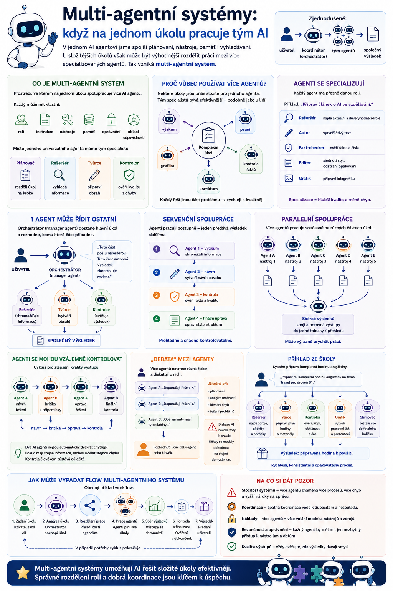

V předchozích článcích jsme si ukázali, jak funguje jeden AI agent: dostane cíl, plánuje, používá nástroje, pracuje s pamětí a podle potřeby si vyhledává informace. Co když je ale úkol příliš složitý pro jeden systém? Jednou z možností je rozdělit práci mezi více specializovaných agentů. Tak vzniká multi-agentní systém.

Co je multi-agentní systém
Multi-agentní systém je prostředí, ve kterém na jednom úkolu spolupracuje více AI agentů.
Každý může mít vlastní:
- roli,
- instrukce,
- nástroje,
- paměť,
- oprávnění,
- oblast odpovědnosti.
Místo jednoho univerzálního agenta tak můžeme mít několik specialistů.
Například:
- Plánovač – rozdělí úkol na jednotlivé kroky.
- Rešeršér – vyhledá potřebné informace.
- Tvůrce – připraví výsledný text nebo jiný výstup.
- Kontrolor – hledá chyby a ověřuje kvalitu.
Zjednodušeně:
Proč vůbec používat více agentů
Na první pohled může vypadat jednodušší vytvořit jednoho velmi schopného agenta, který zvládne všechno.
A často je to skutečně nejlepší řešení.
Jenže u složitějších úloh může být výhodnější práci rozdělit.
Je to podobné jako mezi lidmi.
Jeden člověk může:
- napsat text,
- udělat grafiku,
- zkontrolovat fakta,
- připravit tabulku,
- provést jazykovou korekturu.
Ale tým specialistů může být v některých situacích efektivnější.
Stejná myšlenka se používá u AI agentů.
Specializace agentů
Jednou z hlavních výhod multi-agentního systému je specializace.
Každý agent může dostat přesně definovanou roli.
Představme si úkol:
„Připrav článek o umělé inteligenci ve vzdělávání.“
Jeden agent může fungovat jako:
- Rešeršér – jeho jediným úkolem je najít aktuální a důvěryhodné zdroje.
- Autor – použije podklady a vytvoří čtivý text.
- Fakt-checker – kontroluje tvrzení a hledá nepřesnosti.
- Editor – zkrátí příliš dlouhé části, sjednotí styl a odstraní opakování.
- Grafik – připraví návrh doprovodné infografiky.
Každý tedy řeší jinou část problému.
Jeden agent může řídit ostatní
Multi-agentní systém potřebuje nějaký způsob koordinace.
Jednou z možností je:
nebo
manager agent
Ten dostane hlavní úkol a rozhodne:
- Tuto část pošlu rešeršnímu agentovi.
- Tuto část předám autorovi.
- Výsledek nechám zkontrolovat revizorem.
Můžeme si ho představit trochu jako vedoucího týmu.
Zjednodušeně:
↓
orchestrátor
↙ ↓ ↘
rešeršér – tvůrce – kontrolor
↓
výsledný výstup
Sekvenční spolupráce
Nejjednodušší model je, když agenti pracují postupně.
Například:
↓
Agent 2 – návrh
↓
Agent 3 – kontrola
↓
Agent 4 – finální úprava
Výstup jednoho agenta se stane vstupem pro dalšího.
Tomu můžeme říkat sekvenční workflow.
Je přehledné a poměrně snadno kontrolovatelné.
Paralelní spolupráce
Jinou možností je, že několik agentů pracuje současně.
Například chceme porovnat pět AI nástrojů.
Můžeme vytvořit pět agentů:
- Agent A → nástroj 1
- Agent B → nástroj 2
- Agent C → nástroj 3
- Agent D → nástroj 4
- Agent E → nástroj 5
Každý připraví svou analýzu.
Další agent potom výsledky spojí do jedné tabulky.
To může výrazně urychlit práci.
Agenti mohou výsledek vzájemně kontrolovat
Velmi zajímavou možností je použití agentů jako vzájemných kritiků.
Například:
Agent A vytvoří řešení.
Agent B dostane instrukci:
Najdi chyby, slabá místa a neověřená tvrzení.
Agent A potom dostane připomínky a výsledek upraví.
Tak může vzniknout cyklus:
To může zlepšit kvalitu výsledku.
Ale pozor.
Dva AI agenti nejsou automaticky dvakrát chytřejší.
Pokud používají podobné modely a podobné informace, mohou oba udělat stejnou chybu.
„Debata“ mezi AI agenty
Některé systémy nechávají více agentů navrhnout různá řešení.
Například:
Doporučuji řešení X.
Agent B
Doporučuji řešení Y.
Agent C
Obě varianty mají tyto slabiny…
Nakonec rozhodne další agent nebo člověk.
To může být užitečné například při:
- plánování,
- analýze možností,
- hledání chyb,
- řešení složitějších problémů.
Není ale dobré předpokládat, že „diskuse AI“ automaticky vede k pravdě.
Někdy se pouze několik modelů velmi kultivovaně dohodne na stejné hlouposti.
Příklad ze školy
Představme si systém, který připravuje materiály na výuku.
Učitel zadá:
„Připrav mi kompletní hodinu angličtiny na téma Travel pro úroveň B1.“
Multi-agentní systém může pracovat takto:
- Agent plánovač rozdělí hodinu na warm-up, slovní zásobu, čtení, gramatiku, komunikaci a závěr.
- Agent pro obsah vybere vhodnou slovní zásobu a připraví text.
- Agent metodik zkontroluje, zda aktivity dávají pedagogický smysl.
- Agent pro diferenciaci připraví jednodušší variantu některých úkolů.
- Agent kontrolor zkontroluje správnost angličtiny, časovou náročnost, instrukce a řešení.
- Agent grafik připraví výsledný pracovní list.
Jeden požadavek tak může spustit celý řetězec specializovaných činností.
Multi-agentní systém neznamená nutně různé AI modely
Tohle je časté nedorozumění.
Když řekneme:
„pět agentů“
nemusí to znamenat pět různých jazykových modelů.
Může jít klidně o stejný model, který je spuštěn několikrát s různými instrukcemi.
instrukce „jsi rešeršér“
=
Agent 1
stejný LLM
instrukce „jsi kritik“
=
Agent 2
stejný LLM
instrukce „jsi editor“
=
Agent 3
Rozdíl tedy může spočívat hlavně v roli, nástrojích a kontextu.
Agenti mohou používat různé modely
Naopak je také možné využít rozdílné modely podle úlohy.
- levnější a rychlejší model pro jednoduchou klasifikaci dokumentů,
- výkonnější model pro komplexní analýzu,
- specializovaný model pro práci s obrazem,
- jiný model pro programování.
Orchestrátor potom může rozhodovat:
Na tento jednoduchý krok nepotřebuji nejsilnější model.
To může snížit náklady.
Multi-agentní systémy a nástroje
Každý agent nemusí mít přístup ke všem nástrojům.
A často by ani neměl.
- Rešeršní agent má přístup k webu.
- Dokumentový agent má přístup ke školním dokumentům.
- Autor pracuje pouze s nalezenými podklady.
- Publikační agent může ukládat nebo zveřejňovat výstup.
Tím lze lépe kontrolovat oprávnění.
Proč není dobrý nápad dát všem všechno
Představme si pět agentů.
Každý má přístup k:
- e-mailům,
- databázi,
- souborům,
- webu,
- kalendáři,
- publikačnímu systému.
To výrazně zvětšuje počet míst, kde může nastat chyba.
Lepší je pravidlo:
Znovu se tedy vrací princip minimálních oprávnění.
Sdílená paměť
Agenti mohou používat společnou paměť.
Například rešeršér najde informace a uloží je do sdíleného prostoru.
Autor je následně načte.
Kontrolor k nim přidá připomínky.
Můžeme si to představit jako společnou pracovní tabuli.
↓
Agent C
Tím nemusí každý agent dostávat kompletní historii práce všech ostatních.
Ale sdílená paměť může být také problém
Pokud jeden agent uloží chybnou informaci, mohou ji ostatní převzít.
Například:
Zdroj tvrdí, že datum je 2024.
Jenže zdroj byl špatně interpretován.
Informace se uloží do společné paměti.
Agent B ji použije v článku.
Agent C ji převezme do tabulky.
Agent D ji považuje za již ověřenou.
Jedna chyba se tak může rozšířit celým systémem.
Proto je důležité uchovávat také:
- zdroj informace,
- čas,
- míru důvěry,
- kdo informaci vytvořil.
Co když se agenti zaseknou
Multi-agentní systém může narazit také na velmi praktický problém.
Agenti si začnou práci předávat.
Agent B: Potřebuji další informace od Agenta C.
Agent C: Nejdříve musí Agent A rozhodnout…
A máme digitální poradu, kterou by nám záviděla leckterá instituce. 🙂
Proto musí být jasně definováno:
- kdo rozhoduje,
- kdy práce končí,
- kolik kroků je povoleno,
- co se děje při chybě.
Kdy úkol skončil?
U jednoho jednoduchého agenta je to relativně snadné.
U multi-agentního systému může každý agent chtít výsledek ještě vylepšit.
Vznikne:
↓
kritika
↓
oprava
↓
nová kritika
↓
další oprava
↓
…
Systém proto potřebuje stopping conditions, tedy podmínky ukončení.
Například:
- maximálně dvě kola kontroly,
- nebo pokud kontrolor nenajde závažné chyby, proces končí.
Bez těchto pravidel může systém zbytečně spotřebovávat čas i peníze.
Cena multi-agentních systémů
Každý agent používá model.
Každá jeho akce něco stojí.
Pokud jeden úkol řeší:
- plánovač,
- tři specialisté,
- dva kontroloři,
- editor,
může být počet volání modelu mnohonásobně vyšší než u jednoho agenta.
Multi-agentní architektura tedy může znamenat:
ale také:
vyšší náklady, delší dobu zpracování a větší složitost
Proto není více agentů automaticky lepší.
Jeden dobře navržený agent může být lepší
Tohle je možná nejdůležitější pravidlo celého článku.
Pokud úkol zvládne:
není důvod vytvářet sedm agentů jen proto, že to zní moderněji.
Velmi často je lepší:
než:
složitý multi-agentní orchestr, který nikdo nedokáže pořádně kontrolovat
Workflow versus multi-agentní systém
Další důležitý rozdíl.
Představme si:
krok 2 → vytvoř shrnutí
krok 3 → zkontroluj
Nemusíme kvůli tomu automaticky vytvářet tři agenty.
Může to být pouze jeden agent s několika kroky.
Multi-agentní řešení má smysl zejména tehdy, když jednotlivé role skutečně potřebují:
- jiné instrukce,
- jiný kontext,
- jiné nástroje,
- jiná oprávnění,
- nezávislé rozhodování.
Multi-agentní systémy ve vibe codingu
Tento princip se objevuje také při vývoji aplikací.
Představme si zadání:
„Vytvoř jednoduchou webovou aplikaci pro rezervaci učeben.“
Jeden agent může mít roli:
- Architekt – navrhne strukturu aplikace.
- Frontend agent – vytvoří uživatelské rozhraní.
- Backend agent – připraví serverovou část.
- Testovací agent – spustí testy a hledá chyby.
- Security agent – kontroluje bezpečnost.
- Reviewer – provede závěrečnou kontrolu kódu.
To už se velmi podobá běžnému softwarovému týmu.
Jen jeho členové jsou AI agenti.
Ale kdo nese odpovědnost?
A tady přichází věc, kterou marketingové obrázky často neukazují.
Pokud pět agentů vytvoří chybný výsledek, žádný z nich nenese skutečnou odpovědnost.
Tu stále nese:
Multi-agentní systém proto neodstraňuje potřebu lidské kontroly.
U důležitých úloh ji může naopak ještě zvyšovat.
Multi-agentní systémy ve škole
Ve školním prostředí by mohl například existovat:
- Agent pro přípravu výuky – vytváří materiály.
- Agent pro kontrolu kvality – kontroluje správnost a obtížnost.
- Agent pro přístupnost – kontroluje čitelnost a srozumitelnost.
- Agent pro administrativu – pracuje s nepedagogickými úkoly.
- Koordinátor – rozhoduje, který agent má konkrétní úkol řešit.
To už se blíží představě digitálního učitelského asistenta, který není jedním obrovským chatbotem, ale soustavou specializovaných schopností.
Kdy multi-agentní systém dává smysl
Je vhodný především tehdy, když:
- je úkol složitý,
- lze jej přirozeně rozdělit na role,
- jednotlivé role potřebují různé nástroje,
- části práce mohou probíhat paralelně,
- potřebujeme nezávislou kontrolu,
- chceme oddělit oprávnění.
Kdy je zbytečný
Naopak bych ho nepoužíval, pokud:
- jde o jednoduchý úkol,
- jednotlivé role nedávají smysl,
- jeden agent zvládne celý proces dobře,
- režie komunikace je větší než přínos,
- přidáváme agenty pouze proto, že můžeme.
Pokud potřebujete tři AI agenty, aby vám spočítali průměr pěti známek, někde se návrh systému poněkud utrhl ze řetězu.
Zapamatujte si
Multi-agentní systém je prostředí, ve kterém spolupracuje více AI agentů.
Mohou si rozdělit například role:
Mohou pracovat:
- postupně
- nebo současně.
Mohou mít:
Více agentů ale automaticky neznamená lepší systém.
Přináší také:
- větší složitost,
- vyšší náklady,
- nové možnosti chyb,
- náročnější kontrolu.
Proto platí jednoduché pravidlo:
Co bude následovat
Tím jsme prošli hlavní technické stavební kameny agentní AI:
Teď je čas spojit je s tématem, ze kterého jsme k celé sérii vlastně přišli:
V dalším díle si ukážeme rozdíl mezi:
„napiš mi kus kódu“
a
„tady je můj projekt, udělej tuto změnu, otestuj ji a oprav chyby.“
A právě tam se nejlépe ukáže, že vibe coding a agentní AI už dnes nejsou dvě oddělená témata, ale dost přirozeně do sebe zapadají.